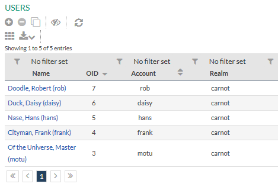
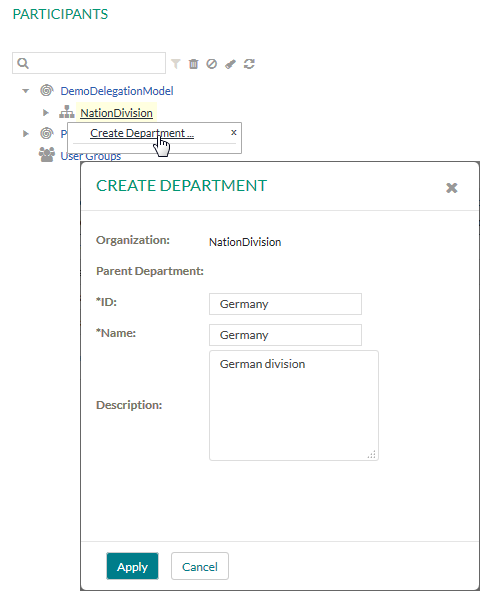
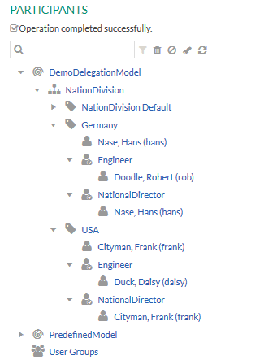

This chapter guides you through the following steps to prepare the delegation scenario:
To be able to perform the delegation scenario in the Stardust Portal, start your server and deploy the model. For information on how to deploy a model, please refer to the chapter Deploying a Workflow Model of the Deployment guide.
Start the Stardust Portal as described in the chapter Logging in the Stardust Portal of the End User Handbook. Login as administrator (motu/motu). You can use the Shift-F8 short key.
First create the users, who will be assigned to the performing roles or organizations in different departments:

Figure: Create new Users.
Now create two departments, where the activity will be delegated from and to:

Now associate the users with roles and organizations in the different departments:
The structure in the participant tree should now look like the following:

Figure: Departments and Associated Users.